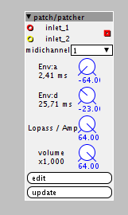

Forum profile : @Knutt
Contributor prefix: Kn
objects
Amp.axp (5.7 KB) - Amp with lopass/vca function
patches
Sine Folder V4.axp (13.1 KB) - Wavefolding based synth
firmware
none yet

Forum profile : @Knutt
Contributor prefix: Kn
objects
Amp.axp (5.7 KB) - Amp with lopass/vca function
patches
Sine Folder V4.axp (13.1 KB) - Wavefolding based synth
firmware
none yet
Status
Ready to use
Description
Final Object for Synth with AHD envellope and selectable assignation between a lopass gate and a gain.
Need a gate to trigger and an audio input
Must add velocity and improve the behavior of the lowpass gate.

Status
Ready to use standalone
Description
Based on the wavefolding implementation topic
Start with Feedback / Wave / Bias and Fine Fold to 0 and Gross Fold to 1.5 for a Classic Sine wave as an Init Patch.
Do not touch the attenuator unless you want to trim the synth.
interesting stuff, look forward to playing with this 
can I make two small requests please...
a) can you not upload files here, they should shared via the community library (using the features in 1.0.8)
the goal is to move away from the forum holding patches and objects, so they will be easier for everyone to find and also maintain.
EDIT: Im assuming you are using 1.0.8? see this post
b) sub patches, put into objects should have an AXS extension, not AXP
(the AXS format may at some point depart from AXP, at that point we may need to differentiate patches and sub-patches... also its useful for users to be able to see what patch are intended for use within other patches)
Thanks
HA! I have almost the exact same patch on my machine! Have been playing with it for a while! Interesting to see the differences.
This sounds great! I like your implementation and I love the feedback glitchy stuff quite a bit! A+
{kind=link}